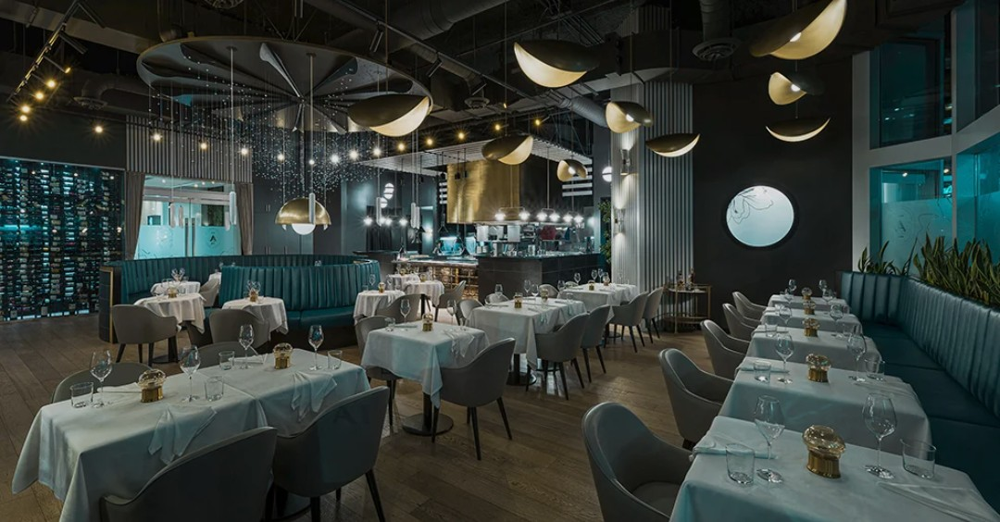
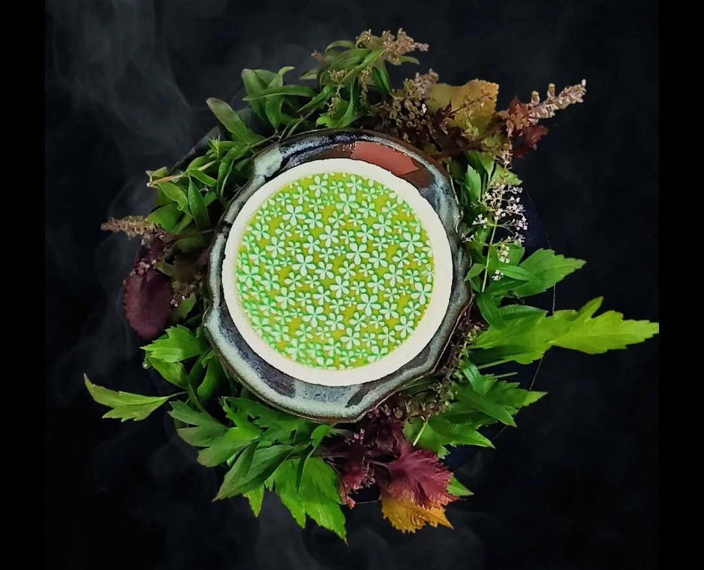
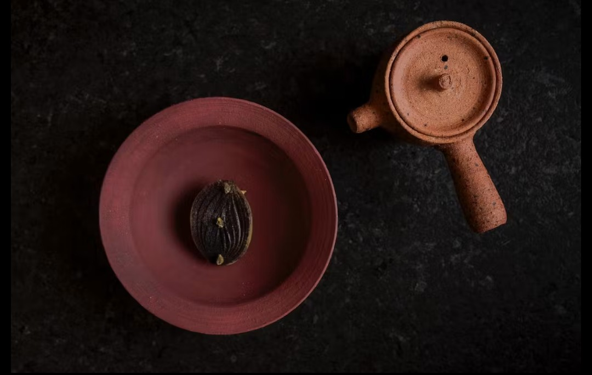
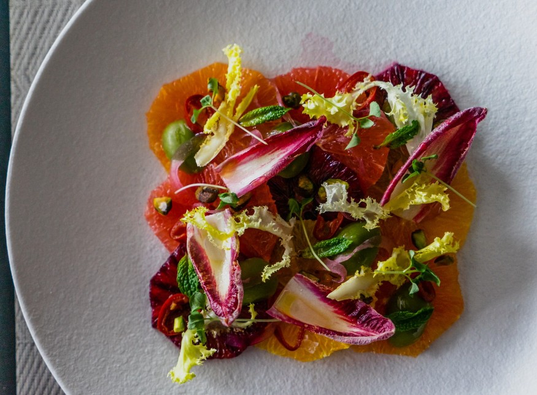

Toronto has its stars. Vancouver has its stars. Québec has its stars. And Ottawa — the country's capital, a city of 1.4 million, home to some of Canada's most ambitious kitchens — has been passed over entirely. That is about to become very difficult to justify.
The Michelin Guide's expansion into Canada has been one of the more consequential developments in the country's culinary history. Since arriving in Toronto in 2022, then Vancouver and Québec, the Guide has forced a national conversation about which cities belong on the world's most prestigious dining map. Ottawa has watched from the sidelines. Not because its restaurants aren't ready — but because Michelin hasn't looked.
That is changing. Ottawa Tourism has held formal discussions with the city's leading chefs about Michelin readiness. The national food media is paying closer attention. And the restaurants themselves — several of them — are operating at a level that would earn recognition in any city the Guide currently covers.
Here is the case for why Ottawa's moment has arrived.
The Michelin Guide does not reward novelty or ambition alone. Its inspectors — anonymous, professional, methodical — return to restaurants multiple times before making any assessment. What they are looking for is deceptively simple: quality of ingredients, mastery of technique, harmony of flavours, the chef's personality expressed through the food, and above all, consistency. A restaurant that is extraordinary on its best night is not a Michelin restaurant. A restaurant that is extraordinary every night is.
This distinction matters enormously for Ottawa's case. The city's finest kitchens are not flash-in-the-pan operations chasing trend cycles. They are restaurants built on discipline, repetition, and a genuine culinary point of view — exactly what Michelin inspectors are trained to recognise.
"The city's finest kitchens are not flash-in-the-pan operations chasing trend cycles. They are built on discipline, repetition, and a genuine culinary point of view."
If there is one restaurant in Ottawa that a Michelin inspector should visit first, it is Atelier. Chef Marc Lepine has been running his modernist tasting menu on Rochester Street for over fifteen years — longer than many starred restaurants in Toronto have existed. There is no printed menu, no à la carte option, no choice. Guests surrender to a sequence of courses that change constantly, executed with a precision and creativity that has earned Lepine two Canadian Culinary Championship titles — a feat unmatched in the country.

What separates Atelier from restaurants that merely aspire to its level is the consistency. The kitchen has maintained its standard across a decade and a half of service, through changing food cultures, through a global pandemic, through the natural evolution of a chef's creative vision. That longevity is not an accident — it is the product of a kitchen that has internalised excellence as a baseline, not a goal.
In any Michelin city, Atelier would be a starred restaurant. The only question is how many.
When Antheia opened in early 2026, Ottawa's food community took notice immediately. Chef Briana Kim's fermentation-driven chef's counter on Somerset Street is unlike anything else in the city — sixteen seats arranged around an open kitchen, a menu that evolves with Antheia's own fermentation programme, and a culinary sensibility that is both deeply personal and technically immaculate.

Kim is also a Canadian Culinary Championship winner — making her and Lepine the only two chefs in Ottawa to hold that distinction. That both of the city's most compelling Michelin candidates are led by Canadian Culinary Champions is not a coincidence. It is a reflection of Ottawa's depth of talent, and a signal that the city is not producing great restaurants by accident.
Antheia is still building its reputation, but the trajectory is unmistakable. The intimacy of the format, the rigour of the technique, and the clarity of the culinary vision are exactly the qualities Michelin inspectors look for in a first star — and beyond.
"That both of the city's most compelling Michelin candidates are led by Canadian Culinary Champions is not a coincidence."
A Michelin city is never built on two restaurants alone. What makes Ottawa's case genuinely compelling is the depth of talent surrounding its leading contenders. Several kitchens are operating at a level that would earn Bib Gourmand recognition or a first star in their own right.

Quiet, precise, and completely self-assured. Stofa's seasonal tasting format in Wellington West represents exactly the kind of cooking Michelin inspectors find on their own — understated, rigorous, and deeply considered.
Refined Canadian cuisine rooted in seasonality, steps from Parliament Hill. Aiana's nine-course tasting menu brings a multicultural perspective to Canadian ingredients with classical discipline and genuine warmth.
Inventive Canadian cooking with bold flavours and a neighbourhood feel. Fauna has been one of Ottawa's most consistently creative kitchens for over a decade — the kind of restaurant that earns Bib Gourmand recognition in the cities Michelin already covers.
The Michelin Guide has always moved at its own pace, on its own terms. It does not respond to campaigns or petitions. What it responds to is evidence — and Ottawa's evidence is now substantial. The talent is here. The ambition is here. The consistency is here.
The question is no longer whether Ottawa's restaurants are ready for Michelin. The question is whether Michelin is ready for Ottawa.